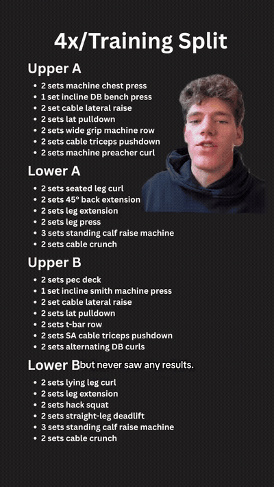
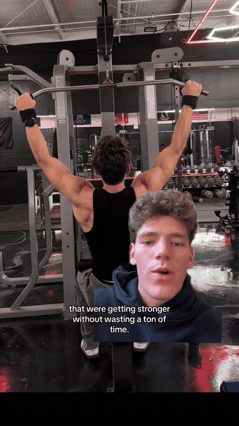
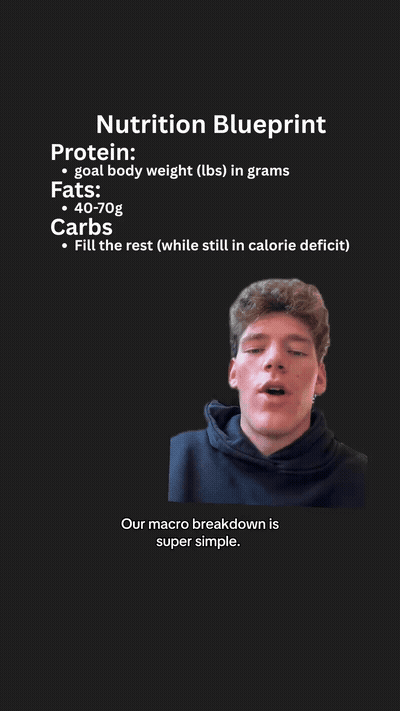
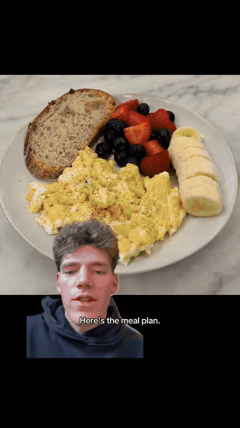
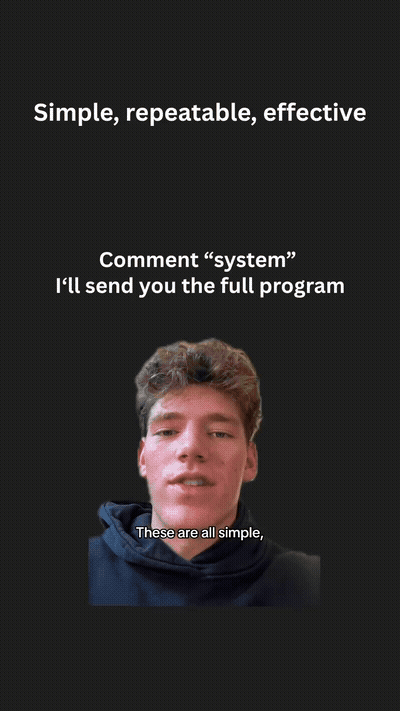

4 days a week, upper/lower split. The balance of getting lean without living in the gym. High intensity, minimal redundancy — the same muscles get hit multiple times a week, so each session stays short.

Each muscle group is hit multiple times a week, so you don't need a ton of volume per session. Higher frequency = more muscle growth.

Protein: your goal body weight, in grams, per day. Fats: 50–60 g/day. Everything leftover while staying in a calorie deficit = carbs. Carbs are key to performance and high energy — don't cut them.

Breakfast: eggs, egg whites, fruit, sourdough. Lunch: grilled chicken, any potatoes, avocado. Dinner: ground beef, rice, veggies. Snack: Greek yogurt, whey, berries. Pre-workout: rice cakes, honey, banana — fast and easily digestible.

Simple, repeatable, effective meals and workouts — you can implement this into your life tomorrow. Three months of consistency changes your body.